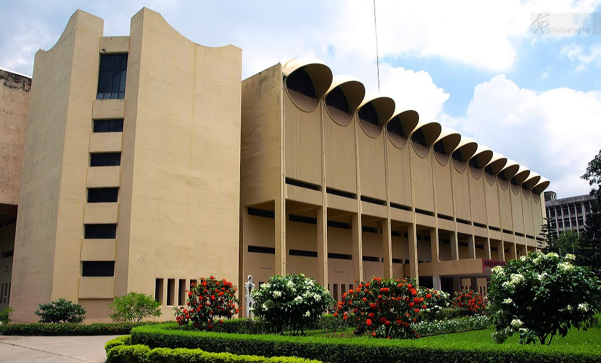
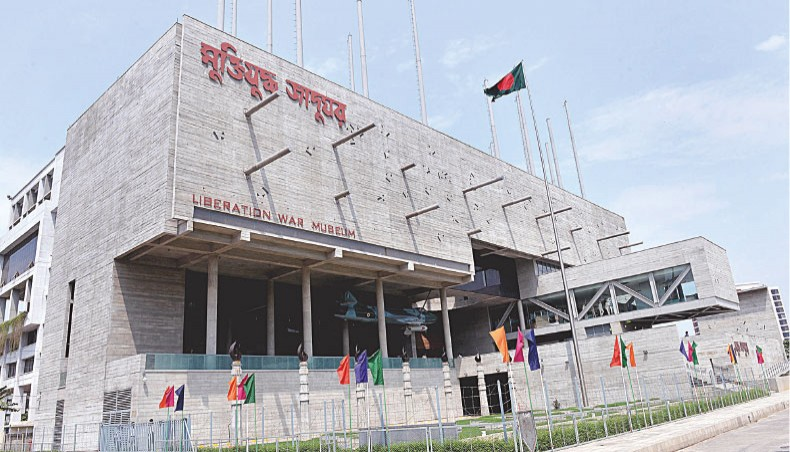
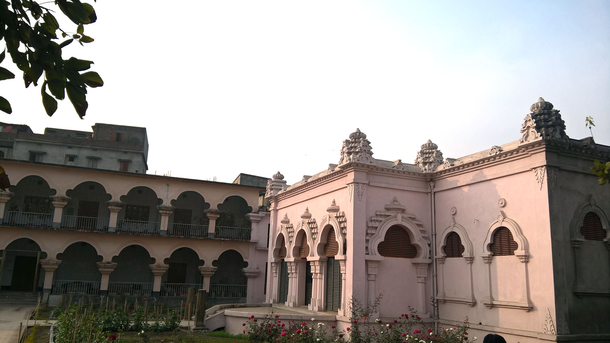

Our land is our pride. Our culture is our pride. Our rich archaeological heritage is our pride. Our museum preserves the pride that has been founded hundreds years ago. Here’s the list of museum where you can wonder our glorious and historic past:
The Bangladesh National Museum, originally established on 20 March 1913, albeit under another name, and formally inaugurated on 7 August 1913, was accorded the status of the national museum of Bangladesh on 17 November 1983.
Address:Shahbagh Rd, DhakaHours: Open today • 10:30 am – 5:30pm
The Liberation War Museum is a museum in Segunbagicha, Dhaka, the capital of Bangladesh that commemorates the Bangladesh Liberation War, which led to the independence of Bangladesh from Pakistan.
Address:Shegunbagicha, DhakaHours: Open today • 9:00 am – 5:00 pm
Varendra Museum is a museum, research center and popular visitor attraction located at the heart of Rajshahi town and maintained by Rajshahi University in Bangladesh. It is considered the oldest museum in Bangladesh.
Address: Shaheb Bazar, Rajshahi
Ahsan Manzil was the official residential palace and seat of the Dhaka Nawab Family. This magnificent building is situated at Kumartoli along the banks of the Buriganga River in Dhaka, Bangladesh.
Construction was started in 1859 and was completed in 1872. It was constructed in the Indo-Saracenic Revival architecture. It has been designated as a national museum.
of the Buriganga River in Dhaka, Bangladesh.
Construction was started in 1859 and was completed in 1872. It was constructed in the Indo-Saracenic Revival architecture. It has been designated as a national museum.
Visiting hours of Ahsan Manzil
Summer Season (April - September) Saturday - Wednesday: 10:30 AM - 05:30 PM Friday: 3:00 PM - 07:30 PM Thursday: Weekly Holiday
Winter Season (October - March) Saturday - Wednesday: 09:30 AM - 04:30 PM Friday: 3:00 PM - 07:30 PM Thursday: Weekly Holiday